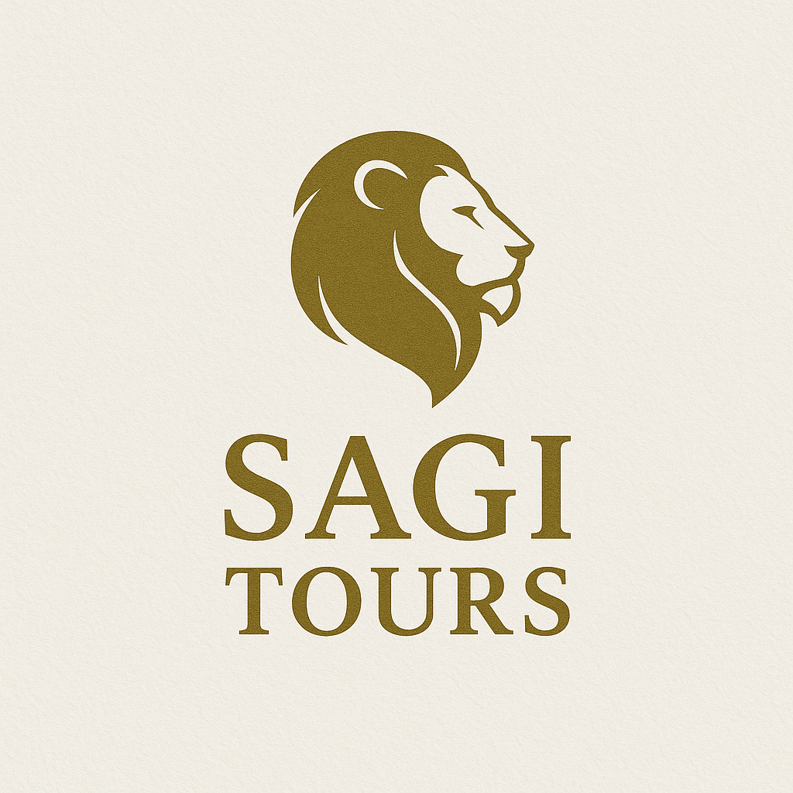

Tel-Aviv · Jaffa
תל-אביב–יפו המודרנית
פלורנטין, נמל יפו, הבאוהאוס והחופים – העיר שלא נחה.

Florentin · Jaffa Port · Bauhaus · Beaches
Jaffa Old Port
היסטוריה, אומנות ושקיעות מטורפות.
Bauhaus Walk
הלב הלבן ורוטשילד.
Food & Markets
כרמל, לוינסקי וטעימות קולינריות.